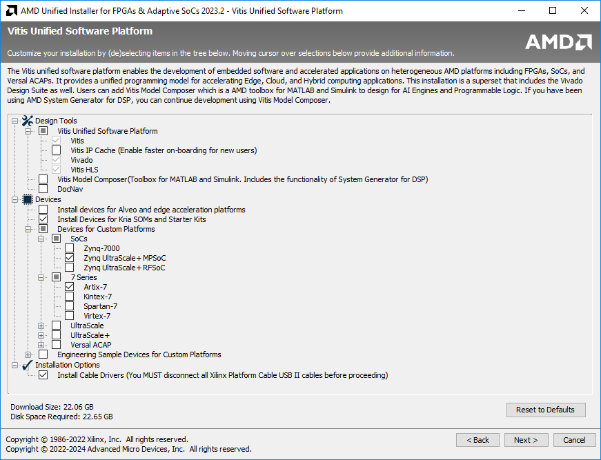

Installing Vitis 2025.1
Usable
This page is in a usable shape. There could still be minor updates, which will be highlighted.
The complete development suite from AMD/Xilinx is also called Vitis, which includes Vivado - i.e., if you install Vitis, Vivado also gets installed. Vitis is used for the software part, Vivado is used for the hardware part.
Installation in Linux is recommended, especially if you want to explore more. Some tools/features, such as AI Engine Development Flow, Petalinux, etc, are available only for Linux. The performance and stability are generally better under Linux, too. The basic requirements in can be met by a Windows installation.
Vitis IDE has switched from Eclipse-based to Visual Studio Code-based. If you are using an older version of Vitis, it is better to stay with the Eclipse-based 'Vitis Classic' IDE as the VS based 'Vitis IDE' in these versions have rough edges (e.g.: driver generation for peripherals in PL). Newer (>=2024.x) versions of Vitis based on VS Code are ok though, and are recommended.
It is not recommended to install on macOS through a virtual machine. If you use a Mac, install Windows and/or Linux for a dual/triple boot.
Some features of Vitis HLS require installing a free license, which has to be generated on the Xilinx/AMD website. Instructions for that are in the last section of this page. This is not needed for the first assignment, so you can install the license later, too.
Windows
Below are the steps to be followed to install Xilinx Vitis 2025.1. The instructions are for the web installer, which is recommended to avoid the hassle of downloading the full installer and uncompressing it.
-
You need an AMD account. If you don't, please create one.
-
The AMD unified web installer is downloadable from the AMD website (Google for it).
-
Run the downloaded file.
-
Click Next, and enter your Xilinx account details. In the selection below, choose 'Download and Install Now'.
-
Agree to all the license agreements on the next page.
-
On the next page, select Vitis.
-
On the next page, click Next.
-
Do the selection as given in the screenshot below (taken in a slightly older version, but the selections are the same, though the UI may look slightly different in the recommended version, i.e., 2015.1). Must-haves are Vitis, Vivado, Vitis HLS, Install Devices for Kria SOMs and Starter Kits, Zynq UltraScale+ MPSoC, and Install Cable Drivers.

-
Artix-7 should be selected if you plan to play with other cheaper FPGAs in the future; else, uncheck it.
-
If you plan to try Alveo on some cloud-based service (e.g., Nimbix cloud) in the future, select that too. It is unnecessary for our course and increases the install size substantially.
-
Click Next and select a suitable directory, Next, and Install. If you are prompted to allow installation of some hardware, firewall warnings about opening certain ports, etc, simply click allow without changing the default options. This may also happen during the first run of certain tools after installation. Make sure you allow or you will have a tough time fixing it later.
-
When the installation is completed, click Finish to close the wizard.
Linux
Vitis/Vivado works very well in RHEL (best-supported)/Fedora/Ubuntu. The instructions below are for Ubuntu. The official instructions can be found here.
-
You need a Xilinx/AMD account. If you don't, please create one.
-
Xilinx/AMD unified web installer for Linux is downloadable from the Xilinx/AMD website (Google for it).
-
cd to download directory
-
chmod +x .bin. No need for sudo unless you want to install in the default /opt directory. It is fine to install under /home/, and sudo is not needed. Please make sure you install to an Ext4 directory, not NTFS.
-
Select the options as detailed in the Windows section above and complete the installation.
-
A dialog box showing Tool installation completed will pop up, asking you to run the installLibs.sh under
<install_dir>/2025.1/Vitis/scriptsto install the necessary libraries, with sudo. Please oblige by changing to the above directory and runningsudo bash installLibs.sh. Also dosudo apt install build-essentialto install gcc and other tools that Vitis HLS depends on, but aren't installed by the installLibs.sh script (!). -
To install cable drivers to access the board, go to
<install_dir>/2025.1/Vitis/data/xicom/cable_drivers/lin64/install_script/install_drivers/and run./install_drivers. -
If the desktop icon does not work or if you are ssh-ing into a remote Linux system with X forwarding, in the command line:
source <install_dir>/2025.1/Vivado/settings64.sh, followed by the commandvivado. -
If starting from the GUI fails, run from the command line to identify the missing library and install it.
-
Do
sudo adduser $USER dialoutif you want to be able to access local hardware without sudo. -
If you have trouble connecting to the board even after that, perhaps you should run
sudo ufw allow 3121/tcp.
Installing Vitis HLS License
The official instructions are here - https://docs.amd.com/r/en-US/ug1399-vitis-hls/Obtaining-a-Vitis-HLS-License.
Go to https://www.xilinx.com/getlicenseLinks. Log in, fill up the license form.
Under Certificate based license > Vivado/Vitis HLS License > Generate Node-Locked License > System Information > Host ID > Enter the details.
Host ID is your PC/Laptop hostname. Select the appropriate OS. Select Host ID Type as Ethernet MAC. Put in your MAC address as the Host ID value. You can find the MAC address using the ipconfig /all command in Windows (search for cmd in the start menu) and ifconfig command in Linux. Click Add and Next, Next.
You can now download the license file  . It will also be emailed to you.
. It will also be emailed to you.
Now, in the Start menu, open Xilinx Design Tools > Manage Licenses 2025.1. Now Get License > Load License > Copy License, and navigate to and select the .lic file. Restart all Xilinx programs (Vivado/Vitis, etc). Done!